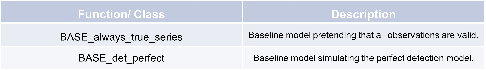

Baseline error detection
True series
In the context of anomaly detection, this function can serve as a placeholder function during the early stages of developing an anomaly detection model. So it will pretend that all observations ar valid. Here’s an example of how to use the ‘BASE_always_true_series’ function:
A series filled with ‘True’ values
>>> data = {"val_raw": [1, None, np.nan, 2],
>>> }
>>> df_fea = pd.DataFrame(data)
>>> TSCC.detection.BASE_always_true_series(df_fea, None, None)
0 True
1 True
2 True
3 True
dtype: bool
As expected our new series has the same length as the given dataframe, but is now filled with only ‘True’ values.
Perfect series
In an anomaly detection system, this function can be used to identify discrepancies between raw data and corrected data .This function helps in detecting whether the raw data points deviate from their expected or corrected values, which could signal an anomaly. Here’s an example of how to use the ‘BASE_det_perfect’ function:
A series with perfect detection
>>> data_fea = {"val_raw": [1, 2, 3]
>>> }
>>> data_tar = {"val_tar": [3, 2, 1]
>>> }
>>> df_fea = pd.DataFrame(data_fea)
>>> df_tar = pd.DataFrame(data_tar)
>>> config = TSCC.preprocessing.Config(colname_raw='val_raw', colname_target_corr='val_tar')
>>> TSCC.detection.BASE_det_perfect(df_fea, df_tar, config)
0 False
1 True
2 False
dtype: bool